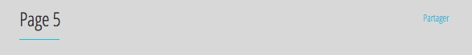

Des portfolios complets, des parties de portfolios ou même des ressources spécifiques peuvent être partagées par un usager donné à l’aide d’un bouton. Les usagers qui recevront le partage en seront avisés par courriel (le courriel contient un hyperlien vers le portfolio partagé).
Ils pourront alors intervenir dans le portfolio selon le rôle qui leur sera assigné. Le partage permet deux possibilités :

Ainsi, si dans son portfolio l’étudiant clique sur Partager avec un pair, le système envoie un courriel à un pair avec un hyperlien vers une section du portfolio dans laquelle le pair pourra inscrire son commentaire.

La spécification du partage se fait dans l’onglet métadonnées d’une section, d’une page, d’une sous-section ou même d’une ressource.

Les conditions de ce partage sont très sophistiquées; voici quelques cas d’utilisation usuels :
Partager
rôle qui partage,rôle destinataire,rôles et/ou courriels,niveau (0-4),durée de vie du lien (en heures),button label@en/libellé du bouton@fr[,condition][;autre partage]
etudiant,all,?,4,unlimited,Partager@fr
 Note1 : Le symbole « ? » fait en sorte que lorsque l’étudiant cliquera sur Partager, une fenêtre s’ouvrira pour lui permettre de spécifier le courriel. Note2 : Lors de l’instanciation du portfolio, le rôle all doit être partagé avec l’utilisateur public.Partager
rôle qui partage,rôle destinataire,rôles et/ou courriels,niveau (0-4),durée de vie du lien (en heures),button label@en/libellé du bouton@fr[,condition][;autre partage]
etudiant,all,?,4,24,Partager@fr
Note1 : Le symbole « ? » fait en sorte que lorsque l’étudiant cliquera sur Partager, une fenêtre s’ouvrira pour lui permettre de spécifier le courriel. Note2 : Lors de l’instanciation du portfolio, le rôle all doit être partagé avec l’utilisateur public.Partager
rôle qui partage,rôle destinataire,rôles et/ou courriels,niveau (0-4),durée de vie du lien (en heures),button label@en/libellé du bouton@fr[,condition][;autre partage]
etudiant,professeur,professeur,1,12,Demander une évaluation@fr
Le professeur reçoit un courriel et n’a qu’à cliquer sur l’hyperlien pour procéder à l’évaluation.
Partager
rôle qui partage,rôle destinataire,rôles et/ou courriels,niveau (0-4),durée de vie du lien (en heures),button label@en/libellé du bouton@fr[,condition][;autre partage]
etudiant,evaluateur,yves.lacoste@airfrance.com,3,12,Demander une évaluation@fr
L’évaluateur externe reçoit un courriel et n’a qu’à cliquer sur l’hyperlien pour procéder à l’évaluation; il n’a pas à s’identifier dans le système Karuta. L’hyperlien est valide pendant 12 heures.
Partager
rôle qui partage,rôle destinataire,rôles et/ou courriels,niveau (0-4),durée de vie du lien (en heures),button label@en/libellé du bouton@fr[,condition][;autre partage]
etudiant,pair,?,1,12,Demander un commentaire@fr
Le collègue reçoit un courriel et n’a qu’à cliquer sur l’hyperlien pour écrire son commentaire.
Note : Le symbole « ? » fait en sorte que lorsque l’étudiant cliquera sur Demander un commentaire, une fenêtre s’ouvrira pour lui permettre de spécifier le courriel de son collègue. On fait ici l’hypothèse que l’étudiant a un grand nombre de collègues et que le designer n’a pas spécifié de façon précise les collègues qui seront mobilisés, de façon à donner plus de latitude à l’étudiant dans le choix du pair qui pourra l’évaluer.En construction...